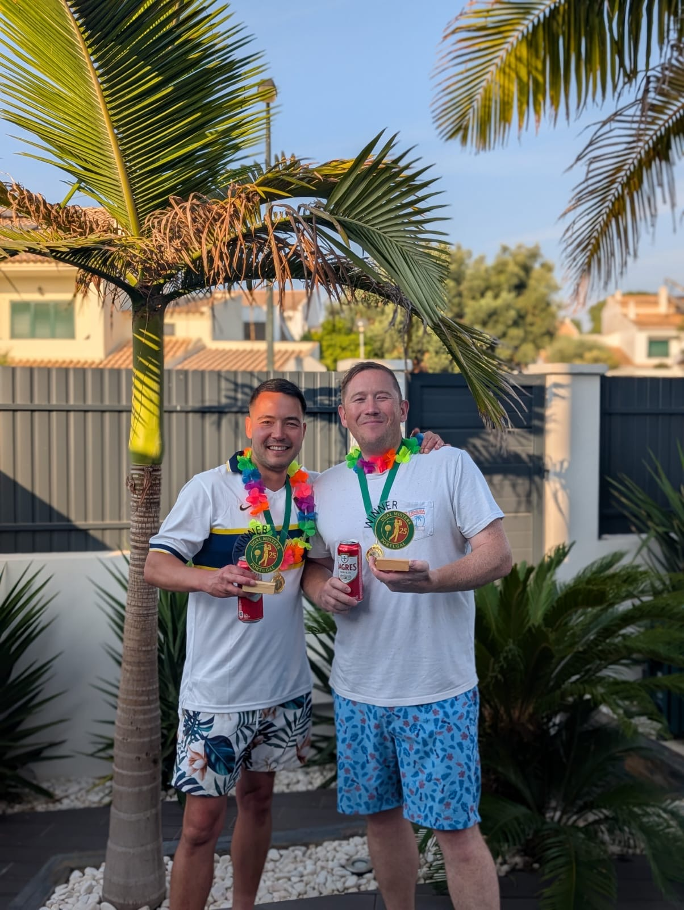

MISTERS
MISTERS UGAL MISTERS 25 — THE ALGARVE CLASSIC
Salgados. Silves. Alto. Three courses, six mates and one unforgettable showdown. It came down to the final green — and when the dust settled it was The Underdogs who walked away with the trophy. Just.
ONE POINT IN IT
| Pos | Team | Players | Points |
|---|---|---|---|
| 1 | The Underdogs | Phil Bennett & Steve Hampshire | 126 |
| 2 | The Malin Men | Robbie McGrath & Sam Howard | 125 |
| 3 | The Honky Tonks | Adam Fermie & John Sitch | 116 |
| Team | Salgados | Silves | Alto | Total |
|---|---|---|---|---|
| The Underdogs | 42 | 49 | 35 | 126 |
| The Malin Men | 42 | 47 | 36 | 125 |
| The Honky Tonks | 44 | 36 | 36 | 116 |
Level after Salgados. The Underdogs took it at Silves with a 49, the biggest round of the week, and held on despite the Malin Men winning the final day at Alto.
The tournament was decided on the last hole. Robbie chipped in on the final green with Sam, John, Adam, Steve and Phil either standing on the green or watching from the side — and it still wasn't quite enough.
THE UNDERDOGS
They didn't have the flashiest scores. They didn't post the lowest round. What they had was consistency, teamwork and a monster day two — a 49-point best ball at Silves that blew the doors off and turned the tournament.
Phil delivered on key holes, Steve steadied the ship with 108, 95 and 105. They won by a single point, and every one of them counted.
They return in 2026 as The Championdogs. Woof woof.

ROBBIE McGRATH — THE SILENT ASSASSIN
267
Lowest total across three rounds.
83
Lowest round of the tournament, at Silves — including a front nine of 39, the only sub-40 nine all week.
3 of 3
The only player to break 90 every single day.
107
Best ball points contributed, twelve more than anyone else in the field.
+55
Best gross to par of the week. Next best was +80.
16
Pars across 54 holes, against three blow-ups.
Under final-day pressure at Alto he posted 88 and very nearly stole it for the Malin Men. Without doubt, the player of the tournament.
PLAYER BY PLAYER
| Player | Team | Salgados | Silves | Alto | Total | Avg |
|---|---|---|---|---|---|---|
| Robbie McGrath | Malin Men | 96 | 83 | 88 | 267 | 89.0 |
| John Sitch | Honky Tonks | 98 | 92 | 102 | 292 | 97.3 |
| Sam Howard | Malin Men | 91 | 98 | 110 | 299 | 99.7 |
| Steve Hampshire | Underdogs | 108 | 95 | 105 | 308 | 102.7 |
| Phil Bennett | Underdogs | 107 | 95 | 112 | 314 | 104.7 |
| Adam Fermie | Honky Tonks | 106 | 115 | 108 | 329 | 109.7 |
| Player | Team | Salgados | Silves | Alto | Total |
|---|---|---|---|---|---|
| Robbie McGrath | Malin Men | 32 | 40 | 35 | 107 |
| Steve Hampshire | Underdogs | 29 | 37 | 29 | 95 |
| Phil Bennett | Underdogs | 28 | 38 | 25 | 91 |
| Sam Howard | Malin Men | 38 | 31 | 20 | 89 |
| John Sitch | Honky Tonks | 30 | 31 | 25 | 86 |
| Adam Fermie | Honky Tonks | 31 | 23 | 25 | 79 |
Robbie's 107 was twelve clear of the field. Sam's 38 at Salgados was the single best round by any player, and his 20 at Alto the worst.
| Player | Birdies | Pars | Triple+ |
|---|---|---|---|
| Robbie McGrath | 2 | 16 | 3 |
| John Sitch | 2 | 9 | 3 |
| Sam Howard | 0 | 12 | 7 |
| Phil Bennett | 0 | 10 | 9 |
| Steve Hampshire | 0 | 8 | 4 |
| Adam Fermie | 1 | 4 | 8 |
Sixteen pars in three rounds, nearly double anyone else, and only three blow-ups. That is what winning the individual honours actually looked like.
MOST CONSISTENT — ADAM FERMIE
Highest overall total, but the tightest score range of anyone: just nine strokes between his best and worst rounds. He delivered what he had every day.
WILDEST RIDE — SAM HOWARD
Opened with a brilliant 91 at Salgados, then 98 and 110. A 19-shot swing, the biggest of the week, and the reason the Malin Men just missed out.
MISTERS 25 AWARDS
| Award | Winner | Reason |
|---|---|---|
| MVP | Robbie McGrath | Clinical. Composed. Classy. |
| Best Round | Robbie McGrath — 83 | Silves: a flawless front nine |
| Most Consistent | Adam Fermie | All three rounds within nine shots |
| Biggest Swing | Sam Howard | 91 to 110 — a wild ride |
| Shot-for-Shot Steady | John Sitch | No blow-ups, no dramas |
| Unsung Hero | Steve Hampshire | Underdog by name, not by nature |
| Vibes Merchants | The Honky Tonks | Beer. Banter. Back nine meltdowns. |
| Songmaster | Adam Fermie | Won after VAR and referee shenanigans. "One Week" by Barenaked Ladies lives on. |
THE MARGINS
THE OTHER COMPETITION
THE RUNNING GAGS
Adam and John ran the "Bobby Shapiro" gag into the ground. Sam found it markedly less funny, and it may well have cost him a few shots. Phil hit at least two houses off the tee, to universal delight.
THE FINAL NIGHT
The lads took over the Underdogs bar and put their own theme music on. Custom pub takeovers, the AI playlist, El Capitano hats, cigars and epic barbecues. Phil called it the highlight of his decade.
THE ALBUM




THE 2025 CRESTS
Every team has rebranded for the Dragon Tour. Here's who they used to be.


UGAL 2025 had everything: drama, disaster, brilliance and beers. There were no passengers — every player had a moment. In the end The Underdogs proved that consistency wins championships.